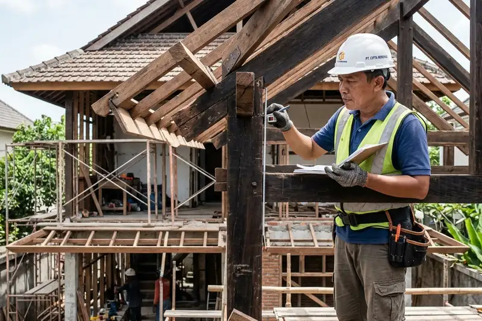

Daftar Isi
- Apa Saja Faktor Utama yang Memengaruhi Biaya Renovasi Rumah 2 Lantai?
- Bagaimana Kondisi Struktur Bangunan Lama Memengaruhi Biaya Renovasi?
- Mengapa Lokasi Rumah Memengaruhi Biaya Renovasi Rumah 2 Lantai?
- Bagaimana Pilihan Material Memengaruhi Total Anggaran Renovasi?
- Bagaimana Perubahan Desain Memengaruhi Biaya Renovasi di Tengah Proyek?
- FAQ
Faktor yang memengaruhi biaya renovasi rumah 2 lantai meliputi kondisi struktur bangunan lama, lokasi rumah, pilihan material, tingkat kesulitan pekerjaan, serta kemungkinan perubahan desain selama proses berlangsung.
- Kondisi struktur bangunan lama menjadi faktor utama yang menentukan kompleksitas pekerjaan renovasi.
- Lokasi rumah memengaruhi biaya mobilisasi material dan aksesibilitas alat bantu kerja.
- Pilihan material, dari standar hingga premium, berdampak langsung pada total anggaran.
- Perubahan desain di tengah pengerjaan sering menjadi penyebab utama pembengkakan biaya.
- Tingkat kesulitan pekerjaan pada lantai dua umumnya lebih tinggi dibanding lantai dasar.
Apa Saja Faktor Utama yang Memengaruhi Biaya Renovasi Rumah 2 Lantai?
Faktor utama yang memengaruhi biaya renovasi rumah 2 lantai adalah kondisi struktur bangunan, lokasi rumah, pilihan material, tingkat kesulitan pekerjaan, dan kemungkinan perubahan desain di tengah proyek.
Setiap faktor ini saling terkait dan perlu dipertimbangkan bersamaan saat menyusun anggaran, bukan dinilai secara terpisah. Pemilik rumah yang memahami faktor-faktor ini sejak awal biasanya lebih siap menghadapi kemungkinan penyesuaian biaya selama proses renovasi berjalan.
Bagaimana Kondisi Struktur Bangunan Lama Memengaruhi Biaya Renovasi?
Kondisi struktur bangunan lama memengaruhi biaya renovasi karena kerusakan atau kelemahan struktur yang baru terlihat saat pekerjaan dimulai sering membutuhkan perbaikan tambahan di luar rencana awal.
Pada rumah 2 lantai, permasalahan struktur seperti retak pada kolom, balok yang mulai lapuk, atau pondasi yang kurang kuat dapat memengaruhi keputusan renovasi secara keseluruhan. Perbaikan struktur biasanya membutuhkan biaya lebih tinggi dibanding pekerjaan finishing, karena menyangkut keamanan dan kekuatan bangunan secara langsung.
Pemeriksaan kondisi struktur sebelum renovasi dimulai, baik oleh kontraktor maupun konsultan struktur, dapat membantu mendeteksi potensi masalah ini lebih awal sehingga biaya perbaikan dapat dimasukkan ke dalam RAB sejak tahap perencanaan.
Mengapa Lokasi Rumah Memengaruhi Biaya Renovasi Rumah 2 Lantai?
Lokasi rumah memengaruhi biaya renovasi karena aksesibilitas jalan, jarak dari sumber material, serta kepadatan lingkungan sekitar berdampak pada biaya mobilisasi dan operasional pekerjaan.
Rumah yang berada di gang sempit atau kawasan padat penduduk umumnya membutuhkan biaya tambahan untuk mengangkut material secara manual, terutama untuk pekerjaan di lantai dua yang memerlukan alat bantu seperti katrol atau perancah. Sebaliknya, rumah dengan akses jalan yang lebih luas biasanya memiliki biaya mobilisasi material yang lebih efisien.
Faktor lokasi juga memengaruhi ketersediaan tukang dan kontraktor di sekitar area tersebut, yang pada akhirnya turut memengaruhi besaran upah kerja secara umum.
Bagaimana Pilihan Material Memengaruhi Total Anggaran Renovasi?
Pilihan material memengaruhi total anggaran renovasi karena rentang harga antara material standar dan material premium bisa berbeda cukup signifikan, meskipun fungsinya serupa.
Sebagai contoh, pemilihan jenis keramik, kualitas cat, atau jenis kusen dapat memengaruhi total biaya finishing secara signifikan tanpa mengubah luas area yang dikerjakan. Material dengan kualitas lebih tinggi umumnya menawarkan daya tahan yang lebih baik, namun perlu disesuaikan dengan kemampuan anggaran yang tersedia.
Pemilik rumah disarankan menentukan prioritas material sejak awal, misalnya menggunakan material standar untuk area yang tidak terlalu terlihat dan material dengan kualitas lebih baik untuk area utama seperti ruang tamu atau fasad depan rumah.
Bagaimana Perubahan Desain Memengaruhi Biaya Renovasi di Tengah Proyek?
Perubahan desain di tengah proyek memengaruhi biaya renovasi karena setiap perubahan biasanya membutuhkan penyesuaian material, upah tambahan, dan terkadang pembongkaran pekerjaan yang sudah selesai.
Perubahan desain yang dilakukan setelah pekerjaan berjalan, yang dalam dunia konstruksi disebut change order, cenderung lebih mahal dibanding perencanaan yang matang sejak awal. Hal ini karena kontraktor perlu menyesuaikan ulang RAB, jadwal kerja, serta terkadang membongkar bagian yang sudah dikerjakan sebelumnya.
Berdasarkan pengamatan umum di sektor renovasi rumah tinggal, proyek yang mengalami banyak perubahan desain di tengah jalan cenderung membutuhkan tambahan waktu dan biaya yang lebih besar dibanding proyek dengan desain yang sudah final sejak awal (pengamatan umum praktisi konstruksi, periode 2025-2026).